来源：https://sv08sqt2jse.feishu.cn/docx/T6oFdX7hDoW6iwxoayNcRZbIncc
大家好，我是肖肖，一个靠60分主播逆袭的理工男，同时也是12次航海实战船员。
从2022年7月入局视频号带货，至今一年半时间，在视频号深耕细作，实操了各种短视频和直播打法，历经多次打法升级，在这2023年终之际做个详细回顾和分享，也和大家一起开启2024年视频号带货的新征程！
在这段时期里，干着干着，干成了两个事情，业务上，从0起步做了300+w的业绩，自然流为主，破100w+收益。个人成长上，从一枚生财萌新，到成为生财万人航海实战中的视频号带货航海教练。
我并不以超级个体为荣，因为我始终认为团队化才是可持续发展的创业之道。但我也深知在创业第一年，真正去跑通从0到1有多么重要，成为了超级个体，也是团队化规模化的基石。接下来我就详细的把这段打怪升级的经历与故事跟大家分享，希望对正在搞钱路上的同学有所帮助。
我毕业于某211理工科大学，在大学就开始折腾一些互联网项目，大三时有幸得到校友赏识，受邀加入他的创业公司，自此开启了一段12年的互联网和电商创业之旅，期间先后做过三个项目，均在所属赛道拿到比较好的结果。我也很感恩，遇到一位贵人校友，对我极力栽培，三年时间我从一个实习生被任命为公司CEO，带团队征战商场。
在这12年里，我完整经历了电商的各个时期，从淘宝货架电商到微信社交电商，2019年经常看刘润的公众号，当时看了篇讲兴趣电商的文章，文中有一张图，印象深刻，大意就是讲已经进入货找人的时代。当时抖音电商已经如日中天，明明知道兴趣电商已经是大势所趋，但因为自建的社交电商+线下代理商模式，也无法分心去投入兴趣电商，只能作罢。
紧接着就是三年疫情，在增长高峰期，遭遇毁灭性的打击，市场业绩一落千丈，抱着对自有品牌的执念及对客户负责的态度一度咬牙坚持委曲求全，直到2022年上半年理性终于战胜了感性，决定抽身出来寻求新赛道。后面有天我看到了一篇文章，讲的是互联网的黄金十年结束了，那篇文章里所写的种种互联网浪潮，我都亲身经历了，却没有发现和抓住其中的很多机会，当时陷入了无比的emo当中，责怪自己过去多年真是一叶障目不见泰山，坐井观天错失很多发大财的时机。
但这又有什么用呢？还是去看看现在有什么项目吧，于是我开始四处寻找和了解。也是庆幸这些年在创业路上所经历的一切，修练出来一些认知，这次寻求新生再度创业，我给自己立下了一个规矩，不拿一分钱积蓄，一定要白手起家，前期必要开支就先刷信用卡，然后要尽快赚钱包住成本，很多男人赚到钱都想买一台自己喜欢的车，而我当时却选择把刚换了一年的新车给卖掉了，就是破釜沉舟，不给自己退路。
机缘巧合朋友推荐，2022年4月18日，加入了生财。这儿有个插曲，在加入时朋友好心给我推荐一个盗版生财，他说你现在紧张可以买这个先看，当时说真的我心动了， 但我进去看了一些帖子就发现这简直是宝藏啊，我就想链接这些发帖者，最终我还是决定支持正版。盗版网站更新的再及时，帖子再干货，它也还是死的，唯有社区的氛围，和一个个圈友真实的链接，才是鲜活的。当时进入生财后，看到了非常多的赚钱项目，我和多数圈友一样，当天兴奋至极，一个接一个的精华帖，刷的根本停不下来，看到感兴趣的项目之后，各种按图索骥延伸阅读，仿佛瞬间打开了新世界的大门。
当时的心理活动：知乎好物带货？我平时不就是这么买东西的吗，卧槽我原来给这帮人贡献了这么多佣金；小红书商单？原来是这么做的矩阵号，上一回我司找郑州代运营公司发的小红书没啥效果，原来几万块是这么打水漂的；淘宝蓝海，什么鬼？我17年淘宝就做不下去了，怎么还有这么多人在淘宝年赚几十上百万；短视频带货，这么香吗？动辄爆单就是日入一万佣金；纳尼？普通人也能成为超级个体年入百万，吊打几十人的公司.....诸如此类，内心产生了强烈的震荡和撞击，这才恍然大悟，原来2010年到2020年这十年互联网时代是过去了，但依然还是黄金遍地，只是我无知而已，那一刻我的内心感到无比的平静，似有一道光闪现，心中也因此萌生了很大的希望，万物之中，希望至美。
然后接下来就遇到了2022年6月生财首次航海改版，万人航海上线了，仪式感满满，那次我登上了两条比较热门的船，一条视频号带货，一条小红书带货，当时就想看看到底哪条船更好拿到正反馈。第一次参加这样的航海，我和小学生一样，把航海手册逐句逐字的看了好几遍，还把手册当中的延伸文章也挨个仔细看了，做到航行的时候心中有数。21天的航海，我搬运混剪了几百条视频，最终就通过橱窗出了十几单，几百元，而小红书未出单，比起有些圈友这个成绩简直弱爆了，但对我而言，显然也看到视频号带货比小红书更好，而且当时在航海群里看到很多圈友短视频爆单，赚到了几千几万，这些活生生的真实案例也再一次把自己震惊了，原来真的是视频号带货风口已至，只不过自己是一个萌新小白而已，意识到是自己的问题，便确定了做视频号带货项目，自此打怪升级之路正式拉开了序幕
航海结束后，仍然照着手册里的方法，在继续搬运和混剪，但当时也真的是只无头苍蝇，不知道什么赛道什么品容易出单，不知道哪种素材容易爆，光看到别人爆单，自己就是爆不了，就算视频爆了橱窗也不出单，一天看很多次订单中心，当时总觉得是自己剪辑技能不够，然后一边调整继续发布视频，一边也每天都去看生财星球有没有关于视频号带货的新干货帖，印象中记得很清楚，星球去年6~8月份关于视频号带货的帖子非常密集，也是在那时记住了很多个大佬的ID，其中对木易最为印象深刻，因为他那篇绑着炸弹做淘宝的帖子充满了能量，有一天我去加他好友，然后主动询问他是否有课程或者训练营，因为我很清楚，真正的优质信息一定是在小圈子的，是需要付费的。他告诉我说在筹备，马上会开训练营，但当我得知学费是生财星球的两倍时，我真的犯难了，一顿思想斗争之下最终还是决定报名，既然认准了这个人，时不我待，我必须抓紧时间希望能抓住一点红利。
进了训练营，看着一个个自我介绍都这么牛逼，我这个萌新小透明竟然感到一丝尴尬，好像进错了圈子，大家讨论的东西我竟然很多看不懂，什么无人直播、半无人直播、OBS绿幕，然后就各种查询，到星球里找帖子补课。然后出乎我意料的是，木易果然yyds，几堂直播课下来，思路清晰了很多，然后当时无人直播有巨大红利，便跟着大佬们按照木易的保姆级教程开始实操了，那是7月份盛夏，一帮大老爷们在为40+的姐姐们各种选连衣裙，跑无人直播。然后我也第一次感受到了直播起飞，最高一场卖了几万块，很多是几千的，但是好景不长只做了十几天便大面积封禁无人直播，最终赚了几万块钱。赚钱的后果是顺带有个实名被连坐了，永久禁播，知道很多人也有同样遭遇，所以内心也没什么波澜，那完全是对抗平台的短期玩法，该啊。即便如此，我仍然很感谢这段经历，那半个月时间群里大佬都在高喊执行力YYDS，并践行着，记得有三天三夜我都没回家，通宵干活。除了无人直播之外，木易还给教了一些其他打法，比如图文挂车、半无人直播甚至后来真人直播等等。当时的玩家应该记得，那时候一个购物车账号市场交易价是3000元，而我仿佛嗅到了一丝商机，因为在自己做搬运混剪的过程中我就拿到过两个购物车号，顺手我就把这两个账号卖掉了变现了6千，然后决定开始做购物车号变现。
2022年的8月，有很多的大佬在视频号日进斗金，无论是图文投流挂车，还是半无人直播，甚至是搬运等视频爆了开直播，而这些仿佛离我都很遥远，我一个小白完全看不懂，也不知咋投流，我能抓住的当下就是做账号涨粉然后过内容规范，进而拿到商品分享权益，然后找到买家，把号卖出去变现。那一个月我带了个大学生兼职助理，一起做了28个购物车号，但当时这种号的行情一天一变，从开始的3000、1500再降到800、500，最终变现了几万。恰逢当时生财又开展了一期航海，我选择了视频号投流这条船，想去看看大佬们到底是怎么玩投流。就在这次航海里，我因为认真卷精华日志，同时因为批量做购物车号的经验，被邀请在航海里做了第一次分享嘉宾，分享我是怎么在短时间内拿到这么多购物车号的经验。事后我才发现除了我是个投流小白之外，其他的分享嘉宾都一等一的投流大佬，好几个都是月百万级gmv，或者投流消耗几十万。但那又如何呢，我给自己打气，人家都沉淀许久了，没啥可比的，做好自己就行了！这一次我算是初步破圈了，分享完之后开始有很多群友加我好友，我也主动加大佬，大佬也对我有印象，能愉快地聊天了，哈哈。这次分享的内容，过了段时间我又做了一些完善，发到生财星球得到了非常多认可，帮助很多圈友解决了如何拿商品购物车权限的问题，最终破圈成功。
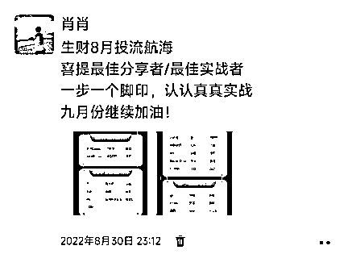
眼看三四个月就这么过去了，虽说打了几场游击战也赚了十来万，自己也越来越有信心了，但心里就是不踏实。我给小助理画的饼，到底该怎么实现呢。购物车号行情下跌严重，是没必要再做了，短视频带货也爆单过几次，但靠天吃饭总不是个事。而当时木易训练营这些大佬玩的什么半无人直播（要出境）、真人直播，对我这理工男来说感觉真的难啊，缺乏勇气。然后我心想要不然再去报个训练营，系统学习一下短视频带货，或者再看看还有什么其他适合自己的玩法。生财又一次帮助到了我，日常刷星球帖，我发现了一个叫Erik的大佬，写了一篇在我看来非常干货的选品精华帖，我有个习惯，喜欢顺着ID去爬大佬们的历史帖子，然后就看到了他之前发的一篇帖子，是讲自己做抖音无人直播和半无人直播的经历，而且把半无人直播的详细玩法系统分享了，让我感到非常震撼，之后又了解到Erik还是生财多期半无人直播航海的教练。于是再一次主动链接，没想到这个大佬，这么接地气，我问了一些短视频相关的问题，他给我回复的非常详细，这让我这个小白感觉非常的受益，顿时好感倍增，心想果然是越牛逼的大佬越谦卑。
那时已经是10月了，仍然还能在微信群朋友圈星球里，看到一些圈友晒爆单截图，但当时星球关于视频号的帖子数量明显没有前两个月那么多了，我感觉红利已经在消退，自己也变得也更加焦虑了。于是新一期的航海，我报了抖音短视频和视频号直播，想进一步去寻找适合自己的具体玩法。在某一个阳光明媚的下午，我还在剪辑视频，正有点犯困，刷一会手机歇歇吧，然后朋友圈看到了Erik教练的训练营招募信息，顿时来了精神，看完全文变得异常兴奋，有这么一个训练营，教你全套抖音半无人直播玩法（不用出境），还承诺没达到既定销售额就给全额退款，只要执行力拉满播够30小时就行，心想这样的训练营简直就是业界良心啊，仿佛又一道光在眼前闪现了，毫不犹豫我立刻联系报名抢占到了名额。这一次21天的训练营，可以说颠覆了我的认知，让我拥有了直播的自信，我一个直播小白竟然掌握了怎么直播起号，三周之内卖了5万的gmv，并且成为训练营中的优秀标杆，在训练营中给大家分享了我的起号经历，从此命运的齿轮再一次开始转动了！
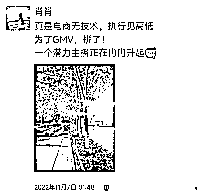
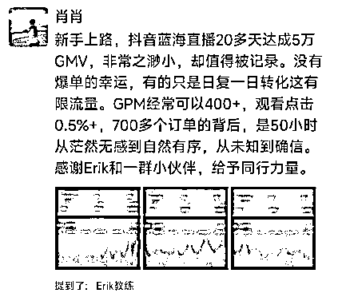
继无人直播尝到了赚钱甜头，又通过抖音半无人直播从小白成长为了一个60分主播，而且视频号直播的航海又涌现了很多圈友的爆单案例，Erik教练当时也判断并跟学员们说，当下正是视频号直播的巨大红利期，于是我果断从抖音杀回了熟悉的视频号平台，只不过这次是做直播。但这时候半无人动态绿幕视频直播，已经被封杀了，等于又完美错过了一波大红利，我安慰自己说，好吧，人啊真是赚不到认知以外的钱，那咱就真人直播。当第一次真人出镜坐在直播间时，这个曾经面对镜头会紧张大脑肯定也会一片空白的理工男，终于在抖音不出境直播并练习了50+小时之后，很流畅的讲着烂熟于胸的直播话术，而一旁的小助理，一定能看到，这个主播眼神和脸部表情还有一丝僵硬。我一边在播着这个品，另外还选了一个广场爆品，买了样品准备到了就开播，这个品参照多个对标直播间，只需让小助理坐在电脑跟前出镜，我演示产品即可，是我熟悉的不出镜直播形式。结果万万没想到的是，这个品测的非常顺利，竟然直接起飞了，短短几天时间卖了10万gmv，赚了四万多，我也第一次尝到了追爆品的滋味。
紧接着就迎来了全国疫情解封，防疫品需求井喷式增长，Erik的第一期视频号训练营还没开营，群里的老学员们就开始纷纷爆单，消毒枪、甘草干姜汤、艾条、柠檬等等一个接一个的品，被训练营的大佬们打爆，然后霸屏广场，就当初一起学直播的圈友，短短一周赚了几十万的有好多个，而我这两周却因为自己和家人陆续都阳了要照顾，躺平的无法动弹。看着昔日不如自己直播能力的同学都在血赚，我一边忍受着浑身酸痛，一边忍受着心里的难受和煎熬，命运跟我开了个几十万的玩笑，我却一点也笑不出来。阳康之后，我便开始和一个同学合作，开始了疯狂的21天直播，我心里想，一定要用尽全力抓住视频号直播的这波红利，流水不争先，争一个滔滔不绝。
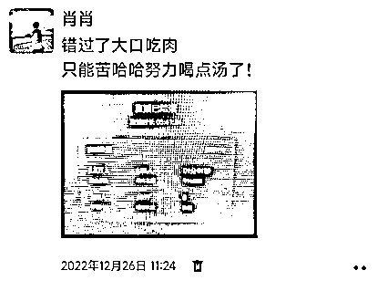
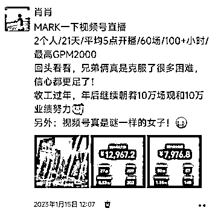
过了个春节，视频号也如同翻了个天。年前，圈友们都在激动地规划新一年的目标，要开始矩阵直播间，付费投流+60分主播能矩阵赚钱的思路和模式，当时被大家津津乐道。2023年那个春节，应该让很多人兴奋，就指望着开年大干一场。然而视频号的规则变化速度，总是不会令大家失望，是的，年后回来大家普遍发现，直播自然流变差了，很多人都说起不来号，圈内一时间无比的安静，就好像年前的热烈没有发生过一样，然后陆陆续续大家在说视频号直播的红利已经过去，而只有我傻乎乎的，还坚信着这件事情。年后一回来，我就开始招兼职主播，继续选品测品，也许可能大概是大佬们聪明的退场了，留给了像我这样的60分主播空间和机会，没想到测的第二个品就又起飞了，招的这个兼职主播也顿时信心满满，播的更加起劲了。但是，视频号总是不按规则出牌，真的是把人搞得无语，我真人出镜静态绿幕，却一场场的弹出低质量违规，总是起飞到一半就被掐掉，然后被按在地上来回摩擦，郁闷之余，又只能去想别的办法，于是我开始开始搭建实景，放弃OBS绿幕，最终才彻底解决这个问题。
一边继续播着这个品，一边还在日常刷着广场，每天花一两个小时刷广场看看直播间都在卖啥，已经成为了习惯。某一天刷到了个品，转化数据很不错，当即联系后端能否合作，开始口头答应的好好的，说给我发样品，但隔了两天再问他却始终给不出来快递单号，然后我一顿真诚询问，才知道没给我发货，这才得知我看到的直播间是他自己的，他不想别人和他直播间竞争，然后骗我说现在没现货了，看得出来是不太情愿合作。但是，事情怎么可能按照他的设想发展呢，我转头就去联系了这个品的其他后端商家，而且是大品牌，他们刚入驻视频号不久，还没多少销量，也没几个达人在带货。所以当我主动找她的时候，配合度非常高，还给我开了定向高佣。最终如愿以偿，这个品被我打爆了，自然流单场9.3万场观（全广场最高），可惜的是自己缺乏对高流量的承接能力，没有掌握直播节奏，导致这场只卖了2.7万元。而另外一个好友在我之后也爆单了，他8万场观就卖了接近9万元，可见差距之大。我俩大爆之后也引起了众多人跟品，在短短几天内，大家一拥而上，一刷我的广场少说有几十个直播间。
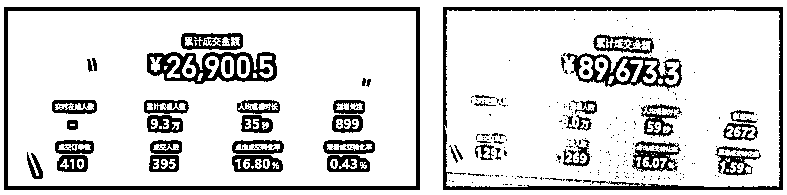
这个品陆陆续续播了一个月左右，当时也已经矩阵两个直播间，另外一个直播间就在持续测品和测玩法，又一个品测出来了，而且是用的短视频撬动直播间自然流打法，一开始是混剪发短视频，然后爆了开播，通过多场开播逐步的撬动了自然推荐流量，最终哪怕不发短视频，兼职主播每天播4小时，也能卖3000~5000千元。这个直播间也持续播了半个多月，因为品的生命周期到头，后端供货不上，被迫暂停了，又开始继续测新的品。
也许是因为上次打爆那个品，播的那一个月一直在密切关注了市场动态，看的越多思考的越深然后有了非常多的发现和感悟吧，我就洞察到了很多直播的小趋势，也更加深刻的理解了选品的本质，以及视频号人群的需求。于是在上一次的成功打爆案例之后，又选了一个解决同一需求的产品，用了之前那个号去播，没想到又发生了意料之外的大惊喜，三场又直接起飞了。而且这个品，客单价更高，利润更高。我便开始尝试微付费投流去放大，因为对直播间的付费投流没有系统学习过，也不敢投放太多，怕干扰和压制本身的自然流，但从数据看投流ROI效果整体是不错的。然后这个品就这样持续播了一个多月，微付费的数据是逐步下滑，可以看到流量成本越来越高，转化率越来越低。加上兼职主播家里有事要回老家，然后这个品也没有再继续播了，此时我开始琢磨，下一步该怎么办？
马上就要进入一年的六月夏天，在视频号带货已经一年了，昔日和我一起玩直播的同学们也越来也少，有的冲到了小红书电商，有的去干起了抖音，还有的在视频号里尝试着其他的玩法，一直坚持在视频号做直播带货的，不管自然流还是付费流，好像也就那么几个，而我也能看到这几个今年也都拿到了不错的结果。内心一个声音反问自己，下一步怎么办，另一个声音坚定的告诉自己，继续向前冲呗，关关难过关关不是过来了，于是继续选品测品.......
然后我就想起来过去这半年，看到过多次纯付费玩家，在看到自然流播起来的品数据不错的时候，冲进来抢市场，于是我也开始测试纯付费打品，纯付费是不管起号不起号有没有自然流，只要ROI能打正，就可以一直稳定直播。然后我就选了一个品开始测试，但是付费播的极其不稳定，总是出现一波流或者消耗不出去的情况，跑了多场之后一算账发现还亏了几千。这可能是我今年感到最艰难的20多天，期间还尝试了短视频图文挂车玩法，也是朋友给我看了一些玩法资料，当时心想我手上还有七八个万粉购物车号呢，去年没舍得白菜价卖掉，留着以后说不定能发挥大作用。可实际一顿操作下来，我却碰了一鼻子灰，辛辛苦苦剪辑的多个视频，投流审核各种不通过，不断的调整素材，还是不过，直到我把视频去的没一点营销属性，审核通过了，然后投流也毫无意义了，因为肯定没转化啊，更可气的是多发上几条挂车带货视频，购物车权限还给掉了，然后又得去发10个原创视频申诉，尝试了两个品都是这个鸟样，索性放弃，当时意识到这碗饭看来是吃不上了，图文挂车已经是比较高门槛的打法了，这和直播带货有本质的区别。又给自己做心理建设，告诉自己不要分心，继续回到擅长又熟悉的直播带货才是正道。
每次就在这样的时刻，笃定向前走，事情就会发生转机。仍然是日常刷直播广场，一个品引起了自己的注意，而且也刷到有几个直播间在播，监测下来数据都不错，于是以我娴熟的技法迅速跟品，万万没想到这一次一飞冲天了。在对微付费投放有了经验之后，我第二场直接用微付费起号，直接一场拉爆了直播间，当天斩获27000，播了几场。接着起了第二个号，还是熟悉的配方，依然是第二场微付费直播起号，然后这个号更猛，四场递增下来，直接冲到了单场11万gmv，刷新个人记录，也在上半年的最后几天，实现了自己年初许下的心愿。最终这个爆品，一个月给我创造了30w的佣金。
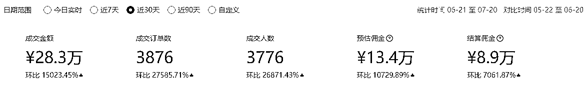
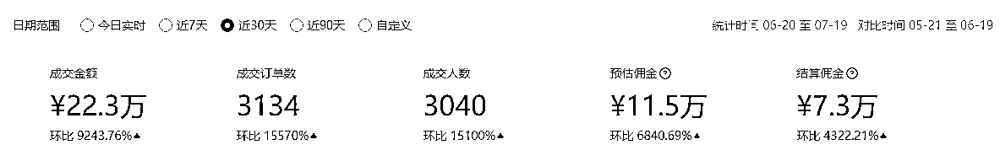
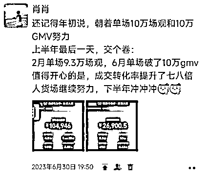
这个品通过兼职主播团队，持续直播了一个半月，后因跟品同行太多市场搞得太乱，不单单转化率大幅下滑，而且时不时出现一些违规，我也便把目光转向了下一个品，同时仍然在思考更加稳定的玩法，仿佛又回到了6月份的那个卡点，想起之前纯付费测的那个品，当初自己是测失败了，但我却仍然能看到有人在纯付费打这个品，所以我归因到自己对付费投流能力不足。于是这一次，我下决心要把这个问题攻克掉，我再一次去寻找训练营，但是没有找到。只能在直播广场看到一些专门做培训，有视频号付费投流相关的线下课。偶然间看到之前一个圈友，也有开线下课，基于对他的信任和了解，去了一趟杭州参加了两天一夜的课程。但说实话，因为我自己本身已经在视频号实操一年，而参加线下课的大部分都是各行各业想入局视频号的公司和运营负责人，来了解一些视频号趋势打法，本质来讲我并非这个课的精准受众，导致线下课内容也并没有满足我的需要和期待，于是就另辟蹊径，开始找圈内付费投流大哥们请教和交流。
通过大哥们分享的信息碎片我拼起来，结合我过去也做了很多付费的数据分析，对底层逻辑的理解，我逐步的悟到了纯付费打法的一些精髓，然后我自己做主播，自己做投手，每一场提前搭建好预约计划，开播去测试怎么能起来流量，怎么能承接做好转化，下播详细记录和分析数据，通过这样的方式去验证总结出来的方法。这一次决定再战6月份失败的那个品，我通过搭建组合计划，三场就测成功了，跑的很稳定。后面为了验证我这套投流打法，又陆续跑了几个客单价差不多的品，越打越顺，我体会到了纯付费流，竟然可以跑的跟自然流曲线一样稳定，有的品还打出来了很高的ROI，自从打了纯付费之后，也认识了更多牛逼的付费玩家，通过交流发现，我们的投放逻辑和策略，也是大同小异的，于是我就更加确信了我这套投流打法是OK的。至此，我也终于体会到了付费投流直播，确实是更加稳定，也终于理解了付费玩家为什么热衷于付费，甚至他们完全不懂自然流玩法也敢烧钱。
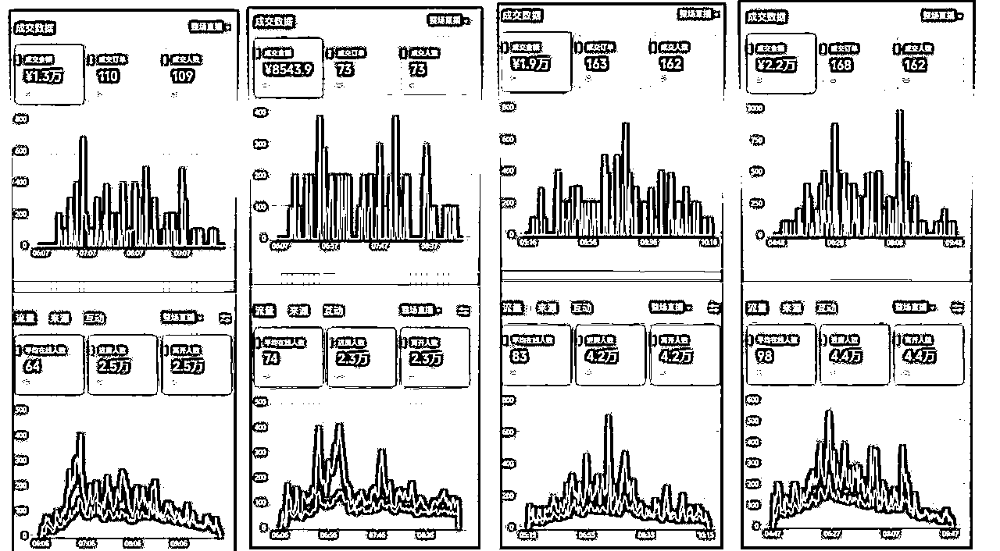
短视频带货和直播带货，都是兴趣电商或者说内容电商，也是电商交易效率最高的形式。侧重其一，或者只做其一，均是可以的。但从平台产品逻辑来讲，短视频种草拿流量，直播间拔草做成交，就是最丝滑最高效的打法。所以真正优秀的电商公司，一定是左手抓短视频，右手抓直播，深度耦合，极致运营。
对于大部分普通人和个人玩家，根据自身背景和优势，既可以选择从短视频带货开始，也可以选择从直播带货开始，短视频带货固然显得更简单更好上手，但大家看完我这一路经历，也可以洞见直播带货也同样适合新手入局。视频号当前仍然处于高速发展的红利期，至少未来一年，我认为还有很多机会，但必须引起重视的是，我们可以明显看到，从平台的发展逻辑和趋势去看，短视频端已经在明显导向原创，搬运混剪黑科技的生存空间越来越小。直播端也已经明显在加速规范电商交易各个环节的体验，最终的胜利终将还是会属于短视频和直播的长期主义玩家。
从自然流到微付费到纯付费一路打下来，我最真实的体感有两点。自然流，才是能力和技术的竞技场。付费流，不过是资源和资金的放大器。新手玩家，你不得不去自然流战场厮杀，练就一番能力和技术，赚到第一桶金。当你冲出来了，积累够了，付费投流就可以助力你放大结果，但终归能否笑到最后，打铁还需自身硬，不能停止学习。
对于直播带货而言，微付费和纯付费分明有什么应用场景和作用，可能是很多没做过投流的人普遍的疑问。微付费有三大作用，第一是为了测试验证人货场，没流量那就买点流量看数据咋样。第二是可以辅助起号，第三是补充流量放大业绩和利润。低客单价，往往只适合微付费辅助起号。中高客单价，既可以辅助起号，也可以放大业绩。而纯付费，无需去在意是否有自然流，只要付费流量的转化结果即最终ROI为正便可持续去加大投放。
在微信这个大生态下，真正的顶级玩家，还得是玩IP人设和私域运营，这也是视频号最有商业价值和爆发潜力的公私域联动打法，丰富的流量来源、专业的人货场、精细化的运营策略、客户生命周期的管理等，与平台共舞。
从平台角度看，无论是抖音、快手，还是视频号甚至小红书，即便在今天都仍然有很多的机会，有蓝海赛道。还记得我前面说的在2021年还看到有很多大佬靠淘宝蓝海赚大钱的吗？所以这几个大平台，是不会缺少赚钱机会和案例，更多时候你觉得下滑，只是你落伍了，掉队了，停止学习，没跟上玩法而已。同样在视频号带货，以我亲身经历来说，我也看见了每一种玩法都仍然能赚钱，所以说条条大路通罗马，深耕细作，注重细节，你会迎来属于自己的高光时刻，爆单和起飞，可以是天降好运，更可以是厚积薄发。我一直崇尚专注的创业理念，即便当我们受挫受阻，可以切换赛道和玩法，但是当你切换之后，请记住不要再东张西望，潜心下来，像个小学生，把这种玩法研究明白，把细节摸清楚，破局之日，亦是个人能力进阶之时。
我非常认同，坤哥的蓝海理念，更认同他今年多次提到的，把70%时间放在调研，寻找和研究对标和案例上的意义。当然这句话的意思，大家要理解全面，这不是说我们每天固定把70%时间用在调研和拆解案例，而是阶段性的工作重心。一旦你确定了复制对象，干就完了，动作、细节一定要到位。赚钱就是复制，这就是一句朴素的真理。调研和拆解的内容，比如对标账号或直播间，流量来源分析清楚没，人货场打得过不，有哪些细节，市场竞争情况怎么样等等。回顾过去多次创业，赚到钱的项目一定是做对了什么，无一例外是有很多人用这个模式赚到钱了。而没赚到钱的项目，的的确确要么是没有调研清楚真实情况，要么就是资源、团队、动作上最终没做到一比一复制。每一个账号案例背后都是一个个鲜活的赚钱故事，先致敬后超越。
干兴趣电商的，最终赚钱，终将归功于选品的成功，或者说产品供应链的优势。产品为需求而生，为特定人群服务。一切选品必须紧紧围绕客户需求，我非常明显的感受到，选对一个品，对于场景和主播的要求就变低了许多，比如经常说的追爆品，追热点，品带人。那同样的，偏蓝海的品，因为竞争小，需求并不小，也很容易胜出。我之前提出：80分选品+70分场景+60分主播，是适合普通人入局直播带货的正确姿势，其实也是基于选品的深度思考。主播可以弱，那就在选品和场景上下功夫，待主播能力变强了，自然可以碾压。万事开头难，先做到60分主播。
提及选品，还有两个非常重要的体感，第一是被验证过的爆品隔断时间仍会继续爆，为什么会这样，其实还是人群需求和竞争程度决定的，这一段时间竞争饱和自然转化率变差，而视频号还有源源不断的新用户进入，又逐步会迎来这个品的下一个生命周期。第二是吃透一个需求，我们应紧盯需求，而不是盯着某个具体的品，这个品不行了说不定换个品又行了，如果你正好踩中了这样的客户需求，那请你把执行力拉满，把这波钱赚够了再说。
这可能是今年最刷新我认知的一点了，也许因为一直沉浸在视频号的原因，下半年才了解和听到很多个在抖音用付费去打低客单价产品的案例和故事，当我们理解用户行为和流量转化漏斗，其实一想也就明白了，这是完全成立的，最终不过是算ROI的账，大家也可以思考思考这个点。今年我很长一段时间，在做自然流直播，并且主要是做中高客单价、中高佣金产品。但为什么今年从自然流开始去测试微付费、纯付费，其实也是感知了平台的流量分配倾向。再说具体点，给大家两个建议，如果你现在打的是中高客单价品，利润比较OK，那么你一定别沉迷薅取自然流，注意加入付费流量。如果你中高客单价品，现在自然流玩的吃力，那么干嘛不去试试做低客单价的产品。自然流和付费流，在某种程度上，一定是有各自明显的战场。
到底是赚快钱还是赚慢钱，取决于所处的阶段、目标、能力、资源等等。如果你是新手玩家，还是建议从小处着手，以赚钱拿到正反馈为目标，先赚到一点钱，建立自己的信心，或者说让团队生存下来，逐步再去做一些有积累的事情，耐住性子。第一个30万（也可以是20万、10万）要尽快积累起来，而且这个阶段大概率拼执行力就可以。但大家需要知道，赚快钱和赚慢钱，往往需要两种不同的能力。赚到快钱了，别沉迷，及早布局更稳定的打法。
如果说生财有术，是一个运营很卓越的星球。那么生财航海，在我看来就是一个伟大的产品、作品。每一期带领上万人航海实战，一起下场实操，然后通过持续的航行进一步放大结果，所产生的商业价值总量，数以亿计。从去年第一次登上万人航海大船，就一直以一个用户身份和视角，体验并见证着生财把这个产品打磨迭代的越来越好。
昨天受邀给11月航海的圈友们，在生财有术的直播间，郭晓文老师访谈，分享了我从船员到教练的一些经历和感受，说实话这一路的成长回味起来，让我感到十分满足，也有些自豪，这是一笔及其宝贵的成长资产、精神财富。
打开生财航海的个人主页，看到了在这一年半里，我先后参加了6次共12条船（去年6月有两条船未显示），其中作为船员身份一共参加10次，每一次均认真按引导要求完成航海打卡。作为船员来讲，我简单分享几点航海感受。
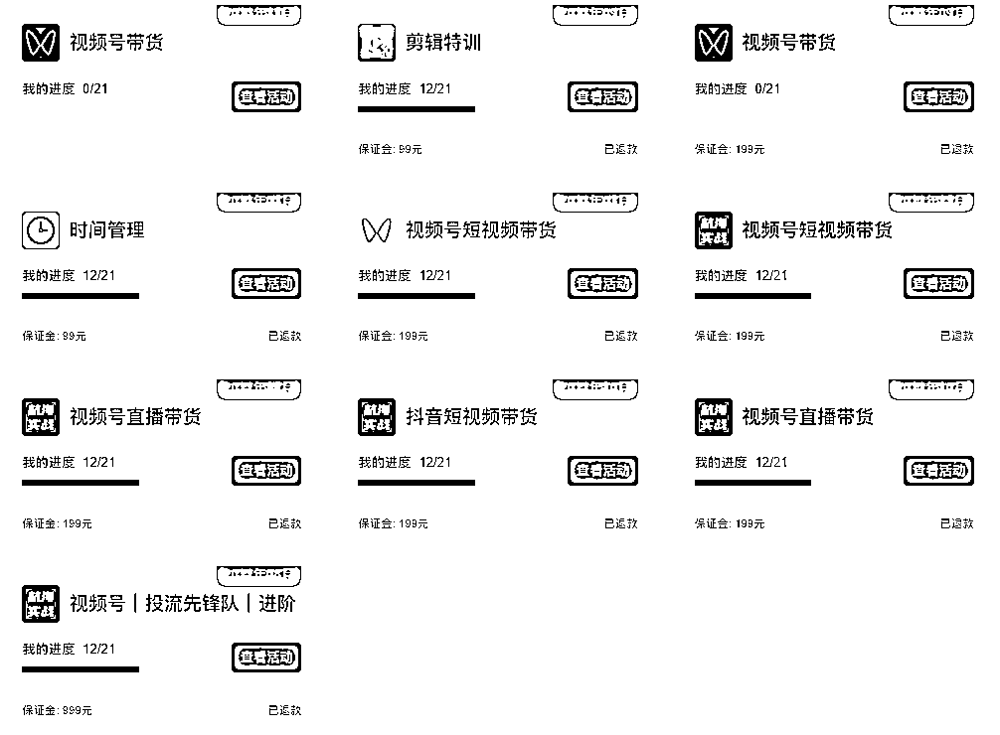
星球和航海，是两种完全不同的定位和用意。星球帮咱们开眼，实战带咱们下场，下场所沉淀的宝贵资料又再沉淀到星球，知行合一，循环优化，简直精妙绝伦。关于如何使用生财有术的方法和技巧，有很多圈友用心的分享过，我可能还用的尚浅。我觉得就一句话，先出发先上路，在路上多交朋友，选好自己的船只，跟着航海线路图，干就完事了。遇到问题，去星球找资料也好，找圈友交流也行，解决掉了这一个问题，下一个，再下一个。
当大家都下场了，或主动或被推动，就要看谁真正把手弄脏了，有没有把手弄脏，其实就在于你的时间投入到哪里了，反映在你的航海日志中，我记得我当船员的时候，就很认真卷日志，朝着精华日志卷，让每天都能有所进步。发表出来的日志，就如同公司要求的日报周报，千万别以为是给组织写的，给领导写的，而是为了自己啊。
选平台＞选赛道＞选品，选择大于努力，这句话的确有道理。方向不对，努力白费。一旦选定了赛道，那就要做好持续航行的准备，一路打怪升级，这就好比创业就是一场修行的说法，登完这座山，还有下一座山。持续航海，始终在船上，可以接收到一手的动态信息，拿到最真实的数据，长期下来，复利价值很大。这就为什么我说，生财实战航海，是一个伟大的产品，它是在帮助个体创业者，增加成功上岸的概率。
生财航海的机制设计真是yyds，不单单带领大家实战，同时还给了一部分人舞台。记得在我前半年的航海中，被邀请以船员身份做过两次分享嘉宾，结果就是我破圈了，因此被更多人认识，开始有了个人影响力，当然能被引起注意到和被邀请，说到底还是因为我干出了一点名堂，并且通过表达和输出，让大家认识和了解到了自己。做分享嘉宾的好处和意义不必我多说，我是怎么理解分享嘉宾这个事的呢？
除了实操项目之外，我觉得就是要站在需求者的角度，去思考自己可以去满足圈友怎样的迫切性需求或者普遍性需求。比如，去年8月份我参加视频号投流航海，我是唯一一个在投流这件事情上的纯小白，但因为我发现当时做投流挂车需要购物车权限，而这个权益账号是大部分人没有的，我批量生产了几十个购物车账号的经验，就有稀缺价值。又比如今年9月份我在航海以教练身份分享的内容，是结合自己直播带货的亲身经历，分享了如何成为60分主播，并具体给出普通人如何去入局直播带货的解决方案，对很多想尝试直播带货的圈友来讲，就是打开了一扇窗。
我知道很多船员不敢去分享，哪怕是在群里给圈友答疑都很犹豫，就是因为总觉得自己还不够优秀，或者怕出错，给自己内设了很高的标准，然后选择封闭，沉默寡言，默默做事。这个也没啥，有人喜欢安静，有人喜欢热闹罢了。但如果我们去看这些拥有更多机会的人，会发现共性就是，这些人很能蹦跶，敢分享，勤分享。我最喜欢生财的一点，就是星球的分享理念和机制，而让我有勇气在小白时期，去做分享嘉宾和在星球发帖，得益于80分带60分，60分带30分，30分可以带10分的认知思维。现在我是越发体会到一点，比你优秀一些的人，才是最值得你学习的对，而不是比你优秀很多的大佬。
如果说今年最开心的事情，除了业务上那些刷新纪录的高光时刻，就是得到生财认证成为了一名生财航海教练，生财的大佬和高手甚多，尤其是视频号带货这条热度一直很高的大船只，成为其中1/8教练，真的感到无比荣幸。目前我还只做了两期教练，还处在一年级。在教练这个角色上，往后还需要向@李诚 @宏 等诸多前辈多多学习，暂时还没有太多的感触可分享，先认真做好教练该做的事情，往后有机会，自身条件也允许的情况下，希望可以持续为生财航海保驾护航，为圈友们分享我的知识、经验。
很多事情计划不来，尤其是知识付费这件事情，很难刻意做成。因为自己从0赚到了100+W，成为了超级个体，因为自己不断在成长过程当中帮助别人，也收获了很多圈友的认可，上天就真的为自己打开了一扇扇窗。前阵子，我在生财的贵人也是我直播的启蒙老师Erik邀请我担任视频号带货训练营的导师，共同给学员们做交付。我这一路走来，是非常感谢Erik的指导和帮助，他也见证了我的成长和变化，有这样的合作机会自然我是非常珍惜的。所以我极尽全力的将自己一年多来的实操经验毫无保留输出，学员的成绩也再一次验证了，我过去这每一步路没白走啊。
有熟悉我的圈友曾问过我，为啥你那么笃定视频号带货，为何你可以不断切换玩法打怪升级，为何你情商这么高左右逢源，那么在文章的最后，我仅代表我自己，分享一些创业心经，与君共勉。所谓有道无术，术尚可求。有术无道，止于术。术法道器势，均有其妙用。
贪多嚼不烂，无论是项目，还是具体打法，做好一种就很厉害了。每进入一个新项目，或者换一种新玩法，得跟小学生一样去学习去实操，然后还要怼够一定的量，量变发生质变，往往细节决定成败。一个人的注意力和精力真是有限的，每次只需去做好一件事情，沉浸进去，获得心流。
无论是做业务，还是个人成长，其实都在赛马，尤其是算法时代下。既然赛马就一定会有多个衡量的指标，或显性或隐性。在过往的创业经历当中，我感触最深的商业策略，就是差异化。不仅要有差异化，还要将这种差异化做的出色，才能真正与众不同，让消费者或者受众有独特记忆。
不要去追一匹马，用追马的时间种草，待到春暖花开时，就会有一批骏马任你挑选。前期先种树种草，猥琐发育。尤其是个体创业，或者小团队创业，一定以最低成本去启动，宁可一个人先干，也别一伙人商量，效率第一。在业务上，找最短途径变现，完成MVP。耐得住寂寞，忍的了孤独，自然生长，静待花开。
即便你有一颗真诚的心，如果不太懂怎么向上社交的姿势，也容易碰一些壁。比如早期，我也曾遇到类似问题，比如关注了一些大佬，没及时发自我介绍，说明自己的需求，导致交流不够通畅。自从我在生财看了一些向上社交的经验后，我恍然大悟，哦原来如此。然后我就更加懂得了，如何跟你希望链接的圈友进行向上社交，也因此结交认识了一些好大哥。
但凡愿意在公开场合做一些分享，就会有人链接你，对他而言是在向上社交，而你需要向下兼容。向下兼容，可以给自己攒人品，也许消耗和耽误了眼前的一些时间，但长期以往会收到很多的认同，群众基础多了，人品攒的多了，当有一天想做一件事情的时候，便可以很快的收获一批支持者。
有一天看到一句话，利他是什么，是一种商业模式，即你能够为别人创造多大的价值，你就会拥有多大的价值，深以为然。没有真诚之心，利他之心，哪来的合作，又怎么可能有多赢的局面。尤其是在当下的互联网环境下，甚至说未来，除了传统招聘自营模式，应该还会更多以线上团队和合作模式展开。
创业的目标和意义到底是什么，每个人定义都不一样，也随着时间和阅历的增长会发生变化。我们踏上了创业或者说做项目搞钱的路上，除了搞钱本身，还有什么样子的终局景象，可以想想，这决定了我们用什么样子的路径。以终为始，可以更加清晰的，确定出来所处的阶段，行稳方能致远。
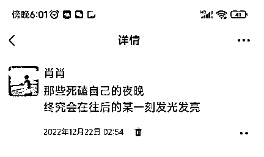
这篇文章不像之前写的几篇精华帖，没有可直接落地的技术型干货，同时也没有那种负债几十万曲折上岸的爽文看的刺激，但却是我本人写起来最有心流的一篇帖子，是真实的创业记录，是笃定了一个赛道后的攻坚克难过程，回头望，原来已经迈过这么多道坎。
无论是全职创业还是个人副业，无论是个人玩家还是小团队，在做一个项目打怪升级的过程中，有太多太多的艰难时刻，需要抉择，需要取舍，中途下车和放弃，是大多数项目夭折和失败的结果，但其实这也是原因。希望本文能带给大家一些力量，遇到卡点和困难时，想尽办法去攻克解决掉了，也许就柳暗花明又一村。
谨以此万字长文记录这一年半的时光和岁月，相信这也是很多经历过视频号这些阶段变化的圈友深刻而美好的回忆。过去一年，凌晨四五点总有个夜行人，奔向他的目的地，因为那儿有他的梦。在写这篇文字的过程中，我脑海中也浮现了几十个生财圈友的名字，大家都没有线下见过面，但是感觉却特别的熟悉。亦仁老板说的下场把手弄脏，坤哥说的蓝海，木易说的执行力，晓文说的碎片拼图，Erik的三小时起步直播风格等等，大佬们所说的这一句句令我印象深刻的话，都是在我战斗中的能量补给。生财有术，不单单有宝藏的赚钱信息，更有浓郁的文化，用商业逻辑构建了人文的世界观，哪怕我一个大老爷们，也情不自禁想说一句：爱你啊，生财~~~